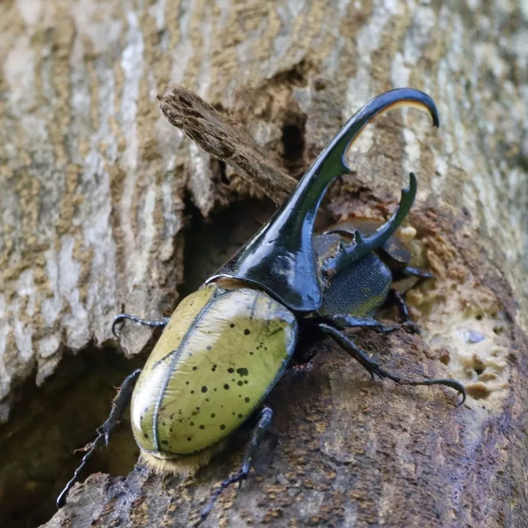

昆虫 · 动物界
长戟犀金龟 Dynastes hercules

世界上体长最大的甲虫之一，雄虫头角和胸角极长，中南美洲热带雨林分布，是著名的观赏和饲养甲虫。
- 分类
- 门节肢动物门纲昆虫纲目鞘翅目科金龟科属巨犀金龟属
- 栖息环境
- 中南美洲热带雨林，成虫在树干和熟果上活动
- 地理分布
- 墨西哥南部至厄瓜多尔、巴西等中南美洲地区
- 保护级别
- 暂无评估；受宠物贸易与标本贸易影响
物种志
长戟犀金龟雄虫连同头角和胸角总长可达 17 cm 以上，是已知体长最长的甲虫之一；头部一根长角向上弯曲，前胸背板另有一根长角向前伸出，两角相对如长戟，因此得名。雌虫没有长角，体型较小，体黑褐色，鞘翅常有黄褐色或灰白色粉状斑纹。
幼虫在腐木和腐殖土中生活，取食朽木，幼虫期可长达 1–2 年；成虫夜间活动，有趋光性，吸食树液和腐果，寿命约数个月。雄虫用长角互相夹斗，争夺树液和雌虫。长戟犀金龟分布于中南美洲的热带雨林，从墨西哥南部到厄瓜多尔、巴西等地，是当地雨林甲虫中的代表种类。由于体型巨大、外形威武，它成为全球最受欢迎的饲养甲虫之一，野生个体也受到标本贸易和宠物贸易的压力。
形态与习性
- 食性幼虫取食朽木与腐殖质；成虫吸食树液和熟果
- 体长雄虫含角可达 17 cm 以上，雌虫明显较小
- 生活史幼虫期约 1–2 年，成虫寿命约数个月
- 武器雄虫用头角和胸角夹斗，争夺配偶
- 习性夜行、有趋光性，白天多在树洞或落叶中躲藏
- 分布中南美洲热带雨林
趣味知识
- 长戟犀金龟是世界上体长最长的甲虫之一，含角可超过 17 厘米。
- 它的头角和胸角像一把长戟，两角对夹能掀翻对手。
- 长戟犀金龟是全球最受欢迎的宠物甲虫之一，价格不菲。